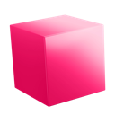

Mezur
Measure any page, right in the browser.
Rulers, distances and the box model without opening DevTools.
- MeasureSpacing between elements.
- InspectBox model, colors, radii, fonts.
- Rulers & guidesDrag out guides, saved per site.
- Window sizeLive width × height while resizing.
Install
-
Download and unzipKeep the folder somewhere safe, Chrome runs Mezur from it. Download Mezur
-
Open extensionsGo to
chrome://extensionsand turn on Developer mode. -
Load unpackedPick the
extensionfolder inside it, then pin Mezur to your toolbar.
Shortcuts
- ⌥
- Measure. Hover an element, hold Option, move to another to see the distances between them.
- ⌘
- Inspect. Box model of the hovered element plus colors, border radius and font.
- R
- Rulers. Drag from a ruler to add a guide, drop it back to delete.